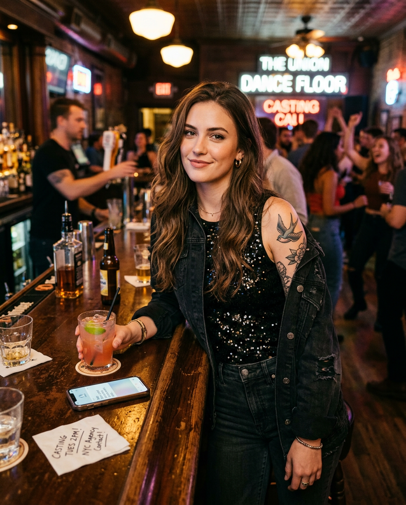

Briar U · Lód · Hokej
Którą bohaterką Off-Campus jesteś?
Odpowiedz na 15 pytań i sprawdź, do której bohaterki jesteś najbardziej podobna.
Hannah
Grace
Sabrina

Allie
Rozpocznij quiz
Pytanie 1 z 15
0%
Twój wynik
Rozkład punktów
Zacznij od nowa